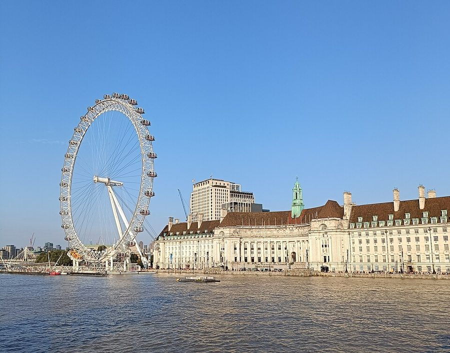
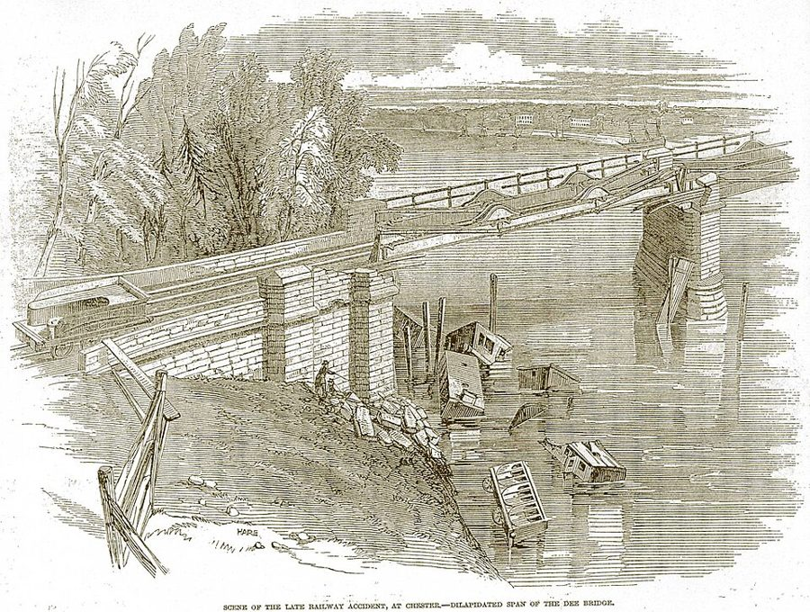
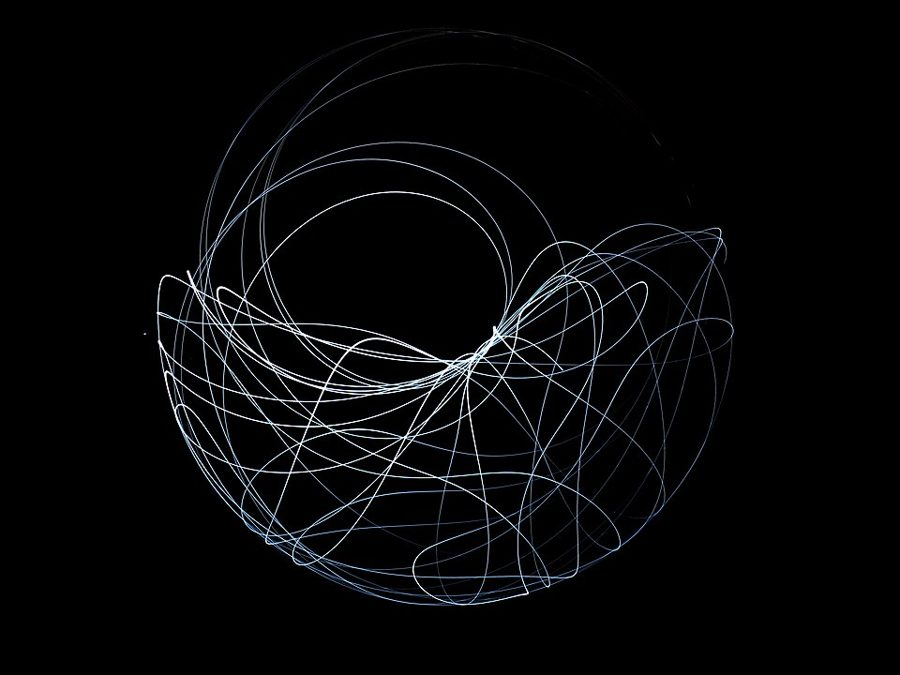

fit for purpose
… they are fit for their intended purpose.
合乎（预期）用途
英国合同和工程里的固定说法。书后注释说，律师可能把它读成不问过错的严格责任，作者认为这对专业服务不合适。
第 6 章是作者的第五个「时代」：系统。这一页是前半章，主题是风险。出了大事故，总有人说「绝不能再发生」，作者的回答是做不到：我们知道的永远有缺口，工程能给的是可接受的风险。接着讲工程师怎么挡：安全系数、纵深防御、故障树；系统复杂到画不出整棵树，就分层交给不同的专家，层与层之间又生出新的风险。最后是他自己的系统框架，落在一句话上：每个硬系统都嵌在有人的软系统里。

作者在 §1 开头说，前五章除了切尔诺贝利和福岛（03b），讲的都是工程的成就。第 5 章讲晶体管一层层搭成电脑，这一页接着拿这个分层讲风险；第 1 章说现代工程像一团让人不安的云，§2 回到这团云。第 6 章前半讲风险从哪来、工程师用什么硬办法挡；06b 讲人和组织：信息靠不靠得住，失败怎样在组织里慢慢酝酿，再回答 §1 那串问题。
别被带歪：§1 说弯曲金字塔是看到美杜姆金字塔垮了才改缓坡度，这是 Mendelssohn 1974 年的假说，书里写了 according to。埃及学界多不接受：弯曲金字塔上看不出变形，改坡另有几种解释。
工程师怎样给自己不知道的事留余地？
读的时候带着这几个问题，读完回来对照「检查一下理解」。
原书这一章没有小标题，一口气写下来。下面的节是本站按段落分的：粗体是本站起的节名，后面是档和英文词数；再下面是这一节开头的几个英文词，在 Kindle 里搜它就能跳过去。读完打个勾。
先把这一页用到的几个概念用书外的例子讲一遍。作者拿它们推出什么，读原书时自己看。后面各页用到时会链回这里。
日常说「有风险」是可能出事。工程里看风险要看两样：出事的机会多大，出了事后果多重。很少发生、一发生就死很多人的事，风险照样大。
作者先说风险从哪来：我们以为知道的和真正知道的之间有缺口，做的和会发生的之间又有缺口，缺口里装的就是风险。所以「保证不再出事」做不到，能做的是把风险压到可接受。什么算可接受不只看数字：熟悉的、觉得自己能掌控的风险，人更愿意接受。作者借 Rumsfeld 的「未知的未知」说，缺口里最值得留意的是这样一种：不只是你一个人不知道，而是谁都不知道。
在这一页：§1 提出缺口，§2 讲可接受和未知的未知。06b 收尾时再回答「多安全才算够」。
安全系数是能力除以需求：一根梁估计能扛 30 吨，预计最重压上 20 吨，系数是 1.5。书里说建筑结构的系数在 1.1 到 2 之间。能力和需求这对词，第 3 章讲过。
系数大不等于一定不坏。梁的强度一根和一根不一样，压上来的东西也时轻时重，两样都在一个范围里晃。偏弱的一根碰上偏重的一次，就坏了。可靠性工程算的就是撞上的机会有多大。同样的系数，荷载晃得越厉害，撞上的机会越大，所以系数和失效概率是两样东西。真实的设计规范也不拿平均值直接相除，见模拟器下面的说明。
在这一页：§3 先讲系数，再说有些工程师算概率，书里说这困难重重。「动手：模拟器」演示两者的差别。
事件树从一件起头的事往后推：核电站一台冷却水泵停了，备用泵启动了没有？没启动又会怎样？一路分叉，看最后会落到哪些后果。故障树反过来，从顶上一个故障往下追：它可能由哪几样更小的故障引起，一直追到不再细分的基本事件。树上的「或门」是下面任一样发生就够，「与门」要几样同时发生。
给每个基本事件估个概率，就能算出顶上的故障有多大机会，也知道该先查哪一样。纵深防御是层层设防：先靠安全系数让事故别发生，万一发生了还有后手，限制它扩大。备用设备在故障树上就是把「或」换成了「与」。
在这一页：§3 讲纵深防御时引出两种树；原书图 20 那棵是车打不着火，最常见的原因是电瓶没电。
一台电脑一层叠一层：晶体管搭成逻辑门，门搭成触发器，再到寄存器、处理器、整机，上面是软件的几层。每层只用下一层提供的功能，不必管它怎么实现，所以一个人可以只懂一层。下面几层第 5 章讲过。
还原论相信弄懂了零件就弄懂了整体，作者说 IT 和 DNA 化学也许是它成功的顶点。可有两种情况零件说明不了整体。一是混沌：双摆这样简单的东西，起点差一丝，过一会儿就走得完全不同。二是连锁：电网、互联网这类处处相连的系统，一处小损伤能一路传开。工程文献里常把经得起扰动叫稳健，受损后能恢复叫韧性；作者把两个词并列着用，说这类系统缺的就是它们。
在这一页：§4 前半讲分层，后半讲混沌和连锁失效。06b 讲整子时还会回到层。
作者把系统分两种。硬系统是物件：一座桥、一台电脑。软系统里有人：一个工程团队、一群用户。说的不是硬件和软件。
他说各种硬系统能用同一套话讲（这套对照是工程和物理里现成的类比，不是他发明的）：势差推动一种流，阻抗挡着它。水位差推水流，温差推热流，电压推电流。势差乘流是功率，伏乘安得瓦（第 4 章）。阻抗分三样：耗掉能量的（电阻），存着势的（电容），存着流的（电感）。
机械那一行容易绕晕。作者把速度当势差、力当流，于是电容对上飞轮的动能，电感对上桥身弹性里的应变能。04b 拿秋千讲 LC 振荡用的是另一种对法（电压对力），电容存满时对上秋千停在最高处。两种对法都成立，别混着用。
在这一页：§5 的框架，概念块下面的表里「—」是书里没讲的格。06b 把它推到软系统上。
| 势差 | 流 | 耗散 | 存势 | 存流 | |
|---|---|---|---|---|---|
| 电 | 电压 | 电流 | 电阻 | 电容 | 电感 |
| 机械 | 速度差 | 力 | 阻尼 | 飞轮的质量 | 桥的弹性 |
| 水 | 水位差 | 水流 | — | — | — |
| 热 | 温差 | 热流 | — | — | — |
先猜：安全系数 2，是不是荷载翻倍才会坏？一根梁系数 2、荷载很飘（时轻时重，分散 40%），另一根系数 1.5、荷载很稳（分散 10%），哪根更容易坏？
一根梁，强度一根和一根不一样，压上来的荷载也时轻时重。图上两条钟形曲线是它们各自多常见，横轴以平均荷载为 1。偏弱的一根碰上偏重的一次，梁就坏了。
需要浏览器打开脚本才能运行。
各个控件：「安全系数」是平均强度除以平均荷载，强度曲线的峰就落在横轴的这个数上；「强度的分散」是同一批梁的强度上下晃多少，10% 是说多数梁落在平均值上下一成之内（严格说是一个标准差）；「荷载的分散」是压上来的东西晃多少，人群、雪、风越难说，分散越大。统计栏的「可靠指标 β」是两条曲线的峰相距多远，用两样合起来的晃动幅度去量，越大越安全；「失效概率」是一根梁碰上一次荷载时坏掉的机会。浅色阴影是两条曲线重叠的地方，坏就坏在这一带，但失效概率是按公式算的，不等于阴影的面积。
这里的数都是本站定的演示值：书里只给了「1.1 到 2」，强度和荷载的分散、两样都按正态分布，是本站的假定。真实的设计规范不拿平均值相除：欧洲规范（EN 1990）把荷载取一个偏大的「特征值」再乘分项系数（恒载常用 1.35，活载 1.5），材料强度取偏小的特征值再打折扣；这些系数是用可靠度方法校准出来的，一般建筑在 50 年里的目标可靠指标约 3.8，失效概率约十万分之七。
书里点名的人、发明和工程，挑读懂这一页用得上的讲。按在书里出现的顺序排，节号是你在书里哪一节遇到它。
弯曲金字塔在开罗以南的代赫舒尔（Dahshur，书里拼作 Dashur），是古埃及第四王朝法老斯尼夫鲁（Sneferu）时造的，约 4,600 年前，书里写约 5,000 年。它下半截陡、上半截缓，棱线半路折了一下。书里转述 Kurt Mendelssohn（书里称他埃及学家兼物理学家）的说法：附近的美杜姆金字塔在施工中垮了，工匠们意识到坡太陡，就把正在造的这一座改缓。作者拿它当最早「从失败里改进」的工程。Mendelssohn 1974 年提出这个说法以后，埃及学界多不接受：弯曲金字塔上看不出变形，美杜姆什么时候塌的也有争议，改坡另有几种解释。
作者列了几场「活着的人还记得」的人为灾难：英国 Flixborough 化工厂爆炸（1974）、印度博帕尔农药厂毒气泄漏（1984）、北海 Piper Alpha 钻井平台大火（1988），最后是 2010 年墨西哥湾的大漏油。那一次是「深水地平线」钻井平台爆炸起火，11 人死亡。书里说是「a BP oil rig」：平台属于钻井承包商 Transocean，BP 是租用它作业的一方。同一节还提到 2010 年海地地震，作者说大量死亡本可以用合适的技术避免，没做到是政治问题。
2002 年 2 月 12 日美国国防部的记者会上，有记者问伊拉克政府向恐怖组织提供武器有什么证据，Rumsfeld 答以「已知的已知、已知的未知、未知的未知」，媒体当成绕口令嘲笑了一阵。作者引了这段话，紧接着说 But Rumsfeld was right。他只取这套分类，拿学物理来讲：小时候不知道世上有牛顿定律，对你是未知的未知；学了物理、知道有相对论却没学，是已知的未知。
迪伊桥是英格兰切斯特附近跨迪河（Dee）的铁路桥，Robert Stephenson 设计，铸铁梁上加了熟铁拉杆。1847 年 5 月 24 日，一列火车过桥时一跨断了，5 人死亡。当地的死因调查指责 Stephenson 疏忽，后来的调查没有怪他，却让人开始担心铸铁用在铁路桥上。作者拿它当「谁都不知道」的例子：破坏机理叫侧向扭转屈曲（梁受弯时，受压的那一边像一根细长的柱子，往侧面一歪，带着整根梁扭过去），他说事后约 50 年才弄明白，这一句正文和书后注释都没给出处。Stephenson 当年另有一说：火车先出了轨，撞断了梁。

双摆是一根摆的下端再挂一根摆。只有两节，运动方程也写得出来，可放手的位置差一丝，过一会儿两次摆的路线就完全不同。作者拿它和天气预报并列，说明看着简单的东西也可能很难预测。这种对初值敏感的行为，一般追到 1960 年代气象学家 Edward Lorenz 的简化天气模型，更早庞加莱就碰到过；作者说 we now know，新的是它进了工程风险的讨论。他特意写了 some (but not all)：不是所有物理过程都混沌，别读成「什么都算不准」。

读英文原书时值得停一下的词和句：工程里的熟词生义、英式说法、作者的比喻。灰色斜体是原句里连续的几个词，在 Kindle 里搜它就能找到；标「每个字都认识」的，是每个词都眼熟、合起来意思却变了的，最容易读错。点「记下」收进词本。
下面是作者在这一页里的主张，本站按主张之间的逻辑重排，不按原书顺序；每条后面是节号，拿不准就回书里那一节再读一遍。
每次事故调查后都有人说「绝不能再发生」。作者说科学、技术、工程、数学给不了确定性，能给的是和自然事件相当的风险水平。什么算可接受并不简单：人照样开车，却有人怕坐飞机；熟悉的、觉得能掌控的风险更容易接受。一次失败也不必然说明那种风险不可接受。
§1 §2We have to accept that science, technology, engineering, and mathematics cannot deliver certainty nor guarantee a future with no failures.— §2。本站译：我们得承认，科学、技术、工程和数学给不了确定性，也保证不了一个没有失败的未来。
以为知道的和真正知道的之间、做的和会发生的之间，总有缺口，所以要带着谦卑管风险。他借 Rumsfeld 的三分法说，最有意思的是未知的未知：不只是你不知道，而是谁都不知道，迪伊桥的破坏机理就是。
§1 §2The simple reality is that what we think we know is always incomplete— §2。本站译：简单的事实是，我们以为知道的，永远是不完整的。
硬的一路是安全系数，有些工程师还算需求超过能力的概率，他说这困难重重；系数之外再加纵深防御，画事件树和故障树，把总的失效机会压到可接受。软的一路是管好人和组织，传统上被看成主观的一面。
§3电脑从晶体管到应用一层叠一层，很少有人懂全部，专家各管一层；层与层之间、各层专家的理解之间，关系并不简单。再加上有些过程对初值敏感，互联的系统会让小损伤连锁放大，从零件推不出整体，只能预料到会有意料之外的后果。
§4他把物件叫硬系统，有人在里面的叫软系统。硬系统能统一看成势差推动、阻抗阻碍的流，电、水、热、机械用一套话讲。可硬系统要由工程团队去理解和控制，由用户去用，团队和用户都是软系统。
§5合起来：这一页把「安全」从一句承诺变成一笔账：知道得永远不全，风险就去不掉；工程师用系数、备份和故障树把它压小，用分层对付复杂，可每一样办法都留下新的缝。缝里的人和组织，留给 06b。
书 2012 年出版。下面挑出这一页里能被后来的研究或事情检验的说法，分「书里 / 当时 / 今天」几栏，并给一个结论。结论判的是标题里「书里的说法：」后面那一句。全书的这一节汇总在今天怎么看。
读完作者的主张，再看它站不站得住。每一块摆出三样：主流怎么看，作者怎么看，本站的评论。最后一句是本站对这一页的总体判断。
主流看法：Rumsfeld 那段话是 2002 年回答伊拉克问题时说的，当时被当成绕口令，后来在项目管理和风险管理里被大量引用。哲学家 Slavoj Žižek 2004 年给它补上第四类：「未知的已知」，也就是其实知道、却不愿承认的事。
作者的看法：三分法本身是对的，最有意思的是谁都不知道的那一类，迪伊桥就是。§2
本站的评论：作者只取认识论，不谈政治，本站也不谈。分类没毛病；可是事故调查里常见的，往往是 Žižek 说的第四类：隐患有人早就知道，消息没传上去，或者被压下了。这正是 06b 讲 Turner、Reason 时要说的组织失败。真正「谁都不知道」的迪伊桥式例子，反倒少见。
主流看法：程序员 Joel Spolsky 2002 年写过一条「抽象泄漏定律」：凡是不平凡的抽象，多少都会漏，底层的细节迟早漏到上层来，上层的人还是得懂一点底层。今天的软件栈比作者列的更深：一个应用底下有运行时、容器、云服务，还有几百个开源依赖。
作者的看法：很少有人懂所有层，专家各管一层；层与层之间、专家的理解之间关系不简单，这是新风险。§4
本站的评论：这是这一页对程序员最有用的一句。作者那一代的层序（语言在操作系统下面）今天看不太对，要点却没过时：CrowdStrike 那次，出事的是安全软件里的一份配置文件，跑在系统内核这一层，大多数写应用的人从没想过它（见「今天怎么看」）。分层让一个人只懂一层也能干活，代价是出事时也只有一层的人看得懂。
主流看法：今天的结构设计规范用「极限状态加分项系数」。欧洲规范 EN 1990 里，荷载取偏大的特征值再乘系数（恒载常用 1.35，活载 1.5），材料强度取偏小的特征值再打折扣；这些系数是用可靠度方法校准出来的，一般建筑 50 年的目标可靠指标约 3.8。
作者的看法：建筑结构的安全系数在 1.1 到 2 之间；有些工程师算需求超过能力的概率，叫可靠性工程，但困难重重。§3
本站的评论：两句都对，也不打架：设计时用系数，系数背后是概率在校准。作者说的困难是真的：极端荷载、人为差错、没人想到的破坏方式，概率都很难估，迪伊桥那种「谁都不知道」的机理根本进不了计算。这也是他接着要讲软系统的原因。
本站的总体看法：§2 和 §3 最值得读：风险去不掉、只能压到可接受，安全系数和概率是两样东西，这两点今天的工程照样这样讲。分层和连锁失效这几年被一次次印证。§5 的势差—流类比是工程里现成的好工具；把它推到人身上是作者自己的一步，下一页要打折扣。
先在心里答，再点开。答错的那题，回书里把对应那一节再读一遍。
做不到：科学和工程给不了确定性。能给的是可接受的风险，和自然事件带来的风险相当；可不可接受又跟人怎么感知风险有关。
第一个对你是未知的未知；第二个是已知的未知；第三个是谁都不知道的未知的未知，作者说最有意思的就是这一类。
1.5。不说明：强度和荷载都会晃，偏弱的一根碰上偏重的一次就会坏，坏的机会要看两样晃得多厉害。
事件树从一件起头的事往后推，看会牵连出哪些后果；故障树从顶上的故障往下追，看可能由哪些更小的故障引起。
很少有人懂所有层，专家各管一层；层与层之间、各层专家的理解方式之间关系不简单，这就是新风险。
不一定。双摆这样简单的东西也会：起点差一丝，过一会儿就差很远。作者也只说有些物理过程是混沌的，不是全部。
不是。硬系统是物件组成的系统，比如桥、电脑；软系统里有人，比如工程团队和用户。作者说每个硬系统都嵌在软系统里。
用一句话说这一页：
想一想：你维护过的系统（代码、服务、家里的网络）里，有哪件事是「谁都不知道」，又有哪件其实是「有人知道却没说」？
读过又忘了，从这里想起来。挑的是这一页最值得记住的例子和说法，不按原书顺序；每条后面是节号，想细看就回书里那一节。全书各页的这一节都收在全书回顾。
一句话：知道的永远有缺口，风险去不掉只能压到可接受；安全系数、故障树、分层是工程师的硬办法，可每个硬系统都嵌在有人的软系统里。
工程给不了确定性，能给的是可接受的风险。可不可接受很看熟不熟悉、能不能自己掌控：怕坐飞机的人照样天天开车。
§2作者借 Rumsfeld 的三分法讲知识的缺口。1847 年迪伊桥垮了，作者说它的破坏机理约 50 年后才有人弄明白。
§2安全系数 2、荷载很飘，可能比系数 1.5、荷载很稳的还危险。本站模拟器的演示值：约 1.3% 对约 0.28%。
§3事件树往后推后果，故障树往下追原因。车打不着火，最常见的是电瓶没电，先查它。
§3电脑从晶体管到应用一层叠一层，专家各管一层，接缝处的误解就是新风险。
§4桥和电脑是硬系统，造它、管它、用它的人是软系统。下一半章从这里讲人和组织。
§5